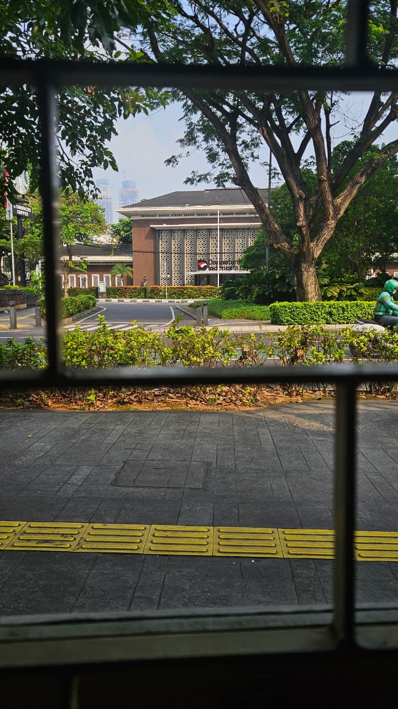

Money That Outlives Its Source: The Quiet Logic of Sovereign Wealth Funds

Pict taken by Reza Fahlevi
Every windfall comes with a deadline. Oil fields deplete, commodity booms end, demographic dividends expire. Countries that understand this build sovereign wealth funds — state-owned investment institutions whose entire purpose is to convert temporary income into permanent capital.
How the machine works
The mechanics are less exotic than the name suggests. A government channels surplus revenue — petroleum earnings, foreign exchange reserves, budget surpluses, or dividends from state companies — into a professionally managed portfolio spread across global equities, bonds, real estate, infrastructure, and private markets, and it is left alone to compound. What separates a genuine sovereign fund from a government slush account is the rulebook: clear limits on annual withdrawals, insulation of investment decisions from day-to-day politics, and a time horizon measured in generations rather than election cycles.
For the public, the payoff arrives through two channels. In the short run, the fund acts as a shock absorber — when oil prices collapse or a pandemic blows a hole in the budget, the state can draw on investment income instead of slashing services or borrowing at panic rates. In the long run, it becomes an endowment. Norway's fiscal rule, which allows the government to spend only a small fraction of the fund's expected long-term return each year, means the underlying wealth is never consumed. The oil will eventually stop flowing; the dividend to Norwegian citizens will not.
Same label, very different machines
Kuwait got there first. The Kuwait Investment Board was set up in London in 1953, before Kuwait was even an independent country, on the far-sighted premise that a nation living off one finite commodity needed a second source of wealth. Its successor, the Kuwait Investment Authority, now manages roughly a trillion dollars through two distinct pools — a General Reserve Fund that backstops the state budget, and a Future Generations Fund, an overseas-only endowment that by law receives a minimum share of state revenues and is treated as untouchable.
Norway's Government Pension Fund Global is the giant of the field and the standard-setter for governance. Created in 1990 and first funded in 1996, it invests exclusively outside Norway — a deliberate choice both to diversify and to keep petroleum money from overheating the domestic economy. By the end of 2025 it held about NOK 21,300 billion, north of US$2 trillion, spread across roughly 7,200 companies — around 1.5 percent of every listed share on the planet. It publishes nearly everything: holdings, returns, voting records, and the ethical exclusions that bar it from certain companies altogether.
Singapore, remarkably, runs two funds with opposite temperaments. GIC, founded in 1981, manages the nation's foreign reserves conservatively and globally, judged against a rolling 20-year real return target — its job is to preserve purchasing power, not to shoot the lights out. It famously refuses to disclose its size, reasoning that publishing the full extent of Singapore's reserves would hand ammunition to currency speculators; outside estimates place it in the range of US$700 to US$900 billion. Temasek, established in 1974, sits at the other end of the risk spectrum. It is an investment company that owns its portfolio outright and behaves like an engaged shareholder — concentrated stakes, heavy equity exposure, active involvement in companies from Singapore's banks to global tech and life sciences. Its net portfolio value was S$434 billion as of March 2025. One country, one pool of national wealth, two deliberately different mandates.
Danantara is Indonesia's entry into this world, launched in February 2025 and openly inspired by Temasek. Its design, however, is unusual. It is not funded by oil rents or fiscal surpluses — Indonesia runs budget deficits — but by consolidating the government's ownership of its biggest state-owned enterprises, from the major banks to Pertamina, PLN, and Telkom, and capturing their dividends. The headline figure of roughly US$900 billion describes the consolidated assets of those enterprises, not a liquid investment portfolio in the Norwegian sense. In practice Danantara is as much an SOE reform vehicle as a wealth fund: its long-term value will be decided by whether it can lift the performance of the companies it now controls, and whether it earns the kind of institutional trust — through audited accounts and published track records — that Norway and Singapore spent decades building.
The arithmetic of starting early
The most persuasive argument for urgency is buried in Norway's own accounts. Of the fund's NOK 21,300 billion value at the end of 2025, cumulative investment returns contributed about NOK 13,500 billion — more than all the petroleum deposits the state ever made. Read that again: most of Norway's sovereign wealth was never under the seabed. It was generated by markets, by capital that was planted early and left to grow.
Kuwait's version of the story runs even longer. A fund seeded with modest sums in the 1950s compounded, through wars and oil crashes, into a trillion-dollar endowment — not because Kuwait saved more than anyone else, but because it started two decades before anyone else. Singapore inverted the formula entirely: no oil, no windfall, just surpluses saved with discipline since the 1970s and 1980s, now sustaining two of the most respected institutional investors on earth.
The pattern is unforgiving to procrastinators. In compounding, the earliest contributions do a disproportionate share of the work; a decade of delay costs far more at the end than it appears to at the beginning. For a country building a fund today, the size of the first deposit matters much less than the credibility of the rules around it — and the willingness to let time, the one input money cannot buy back, do what it does.
Pict taken by Reza Fahlevi
Setiap rezeki besar ada masa habisnya. Ladang minyak akan kering, harga komoditas akan jatuh, bonus demografi akan berlalu. Negara yang sadar akan hal ini membangun sovereign wealth fund, yaitu lembaga investasi milik negara yang tugasnya satu: mengubah pendapatan sesaat menjadi kekayaan yang bertahan selamanya.
Cara kerja mesinnya
Cara kerjanya sebenarnya sederhana. Pemerintah menyisihkan kelebihan pendapatan, bisa dari hasil minyak, cadangan devisa, surplus anggaran, atau dividen perusahaan negara, lalu menanamkannya ke berbagai instrumen di seluruh dunia: saham, obligasi, properti, infrastruktur, hingga perusahaan privat. Dana itu dikelola secara profesional dan dibiarkan tumbuh puluhan tahun. Pembeda antara sovereign wealth fund sungguhan dan sekadar kas cadangan pemerintah terletak pada aturan mainnya: berapa banyak yang boleh ditarik tiap tahun dibatasi dengan jelas, keputusan investasi dijauhkan dari kepentingan politik sesaat, dan cara pandangnya dihitung dalam hitungan generasi, bukan lima tahunan masa jabatan.
Manfaatnya bagi rakyat datang lewat dua pintu. Jangka pendek, dana ini menjadi bantalan: saat harga minyak anjlok atau pandemi menghantam anggaran, negara bisa memakai hasil investasinya tanpa harus memangkas layanan publik atau berutang mahal. Jangka panjang, ia menjadi warisan. Norwegia, misalnya, punya aturan fiskal yang hanya membolehkan pemerintah membelanjakan sebagian kecil dari perkiraan imbal hasil jangka panjangnya setiap tahun. Pokok dananya tidak pernah disentuh. Minyaknya suatu hari akan habis, tapi "dividen" untuk rakyat Norwegia akan terus mengalir.
Nama sama, mesin berbeda
Kuwait adalah pelopornya. Kuwait Investment Board berdiri di London pada 1953, bahkan sebelum Kuwait merdeka. Para pendirinya sudah paham sejak awal bahwa negara yang hidup dari satu komoditas perlu sumber kekayaan kedua. Penerusnya, Kuwait Investment Authority, kini mengelola aset sekitar 1 triliun dolar AS lewat dua kantong terpisah: General Reserve Fund yang menopang anggaran negara, dan Future Generations Fund, dana abadi yang seluruhnya diinvestasikan di luar negeri, menerima jatah minimum dari pendapatan negara berdasarkan undang-undang, dan haram diutak-atik.
Norwegia punya yang terbesar sekaligus paling rapi tata kelolanya: Government Pension Fund Global. Dibentuk 1990 dan menerima setoran pertama 1996, seluruh dananya diinvestasikan di luar Norwegia. Ini pilihan yang disengaja, supaya terdiversifikasi sekaligus mencegah uang minyak membuat ekonomi dalam negeri kepanasan. Akhir 2025, nilainya sekitar 21.300 miliar krona, atau lebih dari 2 triliun dolar AS, tersebar di sekitar 7.200 perusahaan, kira-kira 1,5 persen dari seluruh saham tercatat di dunia. Hampir semuanya dibuka ke publik: daftar kepemilikan, imbal hasil, catatan voting, sampai daftar perusahaan yang dicoret karena alasan etika.
Singapura unik: satu negara, dua fund dengan watak bertolak belakang. GIC, berdiri 1981, mengelola cadangan devisa negara dengan gaya konservatif dan mendunia. Ukuran keberhasilannya adalah imbal hasil riil selama 20 tahun bergulir. Tugasnya menjaga daya beli, bukan mengejar untung besar. GIC juga terkenal tertutup soal jumlah dana kelolaannya, dengan alasan masuk akal: membuka ukuran penuh cadangan Singapura sama saja memberi peluru bagi spekulan mata uang. Taksiran pihak luar menempatkannya di kisaran 700 sampai 900 miliar dolar AS. Temasek, berdiri 1974, kebalikannya. Ia perusahaan investasi yang memiliki portofolionya sendiri dan bertindak sebagai pemegang saham aktif: kepemilikannya terkonsentrasi, didominasi saham, dan ikut campur langsung di perusahaan yang dimilikinya, dari bank-bank Singapura sampai perusahaan teknologi dan life sciences global. Nilai portofolio bersihnya 434 miliar dolar Singapura per Maret 2025.
Danantara adalah pemain baru dari Indonesia. Diluncurkan Februari 2025, ia terang-terangan mencontoh Temasek, meski desainnya tidak lazim. Danantara tidak didanai rente minyak atau surplus fiskal, karena anggaran Indonesia justru defisit. Modalnya adalah kepemilikan pemerintah di BUMN-BUMN raksasa yang dipindahkan ke bawah satu atap: bank-bank Himbara, Pertamina, PLN, Telkom, dan lainnya. Pemasukan rutinnya berasal dari dividen perusahaan-perusahaan itu. Angka 900 miliar dolar AS yang sering dikutip media perlu dipahami dengan hati-hati: itu nilai aset gabungan BUMN-BUMN tersebut, bukan portofolio investasi likuid seperti punya Norwegia. Dalam praktiknya, Danantara lebih mirip kendaraan pembenahan BUMN ketimbang dana tabungan negara. Nilainya di masa depan akan ditentukan dua hal: mampukah ia membuat perusahaan-perusahaan yang dikuasainya lebih menguntungkan, dan mampukah ia membangun kepercayaan publik lewat laporan keuangan yang diaudit dan rekam jejak yang dibuka, sesuatu yang butuh puluhan tahun dibangun Norwegia dan Singapura.
Matematika memulai lebih awal
Bukti paling telak soal pentingnya memulai cepat justru ada di pembukuan Norwegia sendiri. Dari nilai dananya sebesar 21.300 miliar krona pada akhir 2025, sekitar 13.500 miliar krona berasal dari akumulasi hasil investasi, lebih besar dari seluruh setoran minyak yang pernah dimasukkan negara. Sebagian besar kekayaan Norwegia sesungguhnya tidak pernah ada di dasar laut. Kekayaan itu diciptakan oleh pasar, oleh modal yang ditanam sejak dini dan dibiarkan bekerja.
Kisah Kuwait lebih panjang lagi. Dana yang dimulai dengan jumlah sederhana pada era 1950-an tumbuh melewati perang dan berkali-kali kejatuhan harga minyak, hingga menjadi dana abadi senilai satu triliun dolar. Pencapaian itu lahir bukan karena Kuwait menabung lebih banyak dari negara lain, melainkan karena memulai dua puluh tahun lebih dulu. Singapura malah membalik rumusnya: tanpa minyak, tanpa durian runtuh, hanya surplus yang ditabung dengan disiplin sejak era 1970-an, dan kini menopang dua lembaga investasi paling disegani di dunia.
Pola ini kejam bagi yang suka menunda. Dalam compounding, setoran paling awal justru yang bekerja paling keras. Menunda sepuluh tahun terlihat sepele di awal, tapi ongkosnya sangat mahal di ujung. Bagi negara yang baru membangun dananya hari ini, besar kecilnya setoran pertama jauh kurang penting dibanding kredibilitas aturan yang mengelilinginya, serta kesabaran untuk membiarkan waktu, satu-satunya modal yang tidak bisa dibeli kembali, bekerja dengan sendirinya.